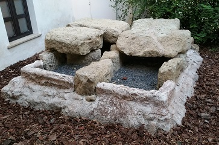

|
NECRÓPOLIS
|
||||||||
|
Las necrópolis romanas de Corduba prácticamente
rodearon la ciudad, por la gran cantidad de hallazgos se demuestra que Corduba
tuvo una importante demografía. Se pueden situar cuatro necrópolis cuyo eje coincidiría con las puertas principales de la ciudad. Por el este saliendo por la Puerta de Roma, junto a la Vía Augusta estaría la necrópolis patricia, a juzgar por los ricos sarcófagos recuperados. Se cuenta con menos datos sobre la necrópolis sur, debido a la ampliación de la ciudad hasta el río. Por la orilla izquierda del río han aparecido sarcófagos, inscripciones y restos humanos. Posiblemente estuvo en el Campo de la Verdad. De la necrópolis oeste hay más datos. Se atestiguan inhumaciones e incineraciones, es la necrópolis más antigua. Por su situación y los hallazgos, como el mausoleo de la Puerta de Sevilla que procede de Ciudad Jardín, se puede suponer una zona noble. También tuvo una zona algo más alejada para el resto de habitantes que se extendió hasta las cercanías del río, donde se halló un fragmento de sarcófago con escenas de recolección de aceitunas. La necrópolis norte estaba situada junto a la
calzada que lleva a la sierra, fue posiblemente la de mayor extensión de Corduba.
Fue parcialmente arrasada por la ocupación musulmana. De la necrópolis norte
destaca el Hipogeo de la Diputación Provincial. También destaca el Sarcófago de
mármol conservado en el Alcázar de los Reyes Cristianos. Esta necrópolis se usó
hasta el siglo IV. |
||||||||
|
MONUMENTO FUNERARIO DE LA DIPUTACIÓN Durante los trabajos de adecuación de la Diputación Provincial en los 70 se pusieron al descubierto varias tumbas romanas que conformaban un sector importante de la necrópolis septentrional de Córdoba datadas en el siglo I.
Este hipogeo se dispuso junto a la vía minera Ad Montes, que desde la puerta Norte de la ciudad, conocida como Puerta Osario, se comunicaba con Sierra Morena.
MONUMENTO FUNERARIO DE C/ LA BODEGA Se trata de un hipogeo con posible recinto funerario y remate superior, de planta rectangular construida mediante sillares de calcarenita rematado con una bóveda de cañón.
MONUMENTO FUNERARIO DE LA PUERTA DE SEVILLA Apareció en la esquina de las calles Infanta Doña María y Antonio Maura. Era una tumba monumental realizada en sillares de calcarenita local. Fue desmontado y trasladado al Museo Arqueológico Provincial.
En su interior se encontraron dos urnas, un punzón de hueso estriado y algunas piezas de Terra Sigillata. Se ha datado hacia la mitad del siglo I.
LOS ENTERRAMIENTOS DEL HOTEL EUROSTARS HOTELS Tres enterramientos de época romana del siglo IV pertenecientes a la necrópolis oriental. Constituidos con cistas de calcoarenita y cubiertas con lajas del mismo material.

LOS MONUMENTOS FUNERARIOS DE LA PUERTA DE GALLEGOS Los monumentos funerarios de Puerta de Gallegos son dos de los ejemplos más señeros de la arquitectura monumental funeraria de la Córdoba romana, tanto por sus dimensiones, como por el tipo arquitectónico en que pueden englobarse. Se encuentran situados a ambos lados de la vía romana que unía la ciudad con la vecina Hispalis. Miden 13 m. de diámetro y el primer monumento fue construido en tiempos de Augusto. Estaba compuesto por un ustrinum y una zona de deposición funeraria separada del anterior por un muro bajo. Con Tiberio este tipo de mausoleos alcanza su apogeo. Es una copia en miniatura del mausoleo del emperador Augusto y se asocian con el ordo equester de la ciudad. Se construyó con opus quadratum, opus caementicium y se decoró con mármol. A finales del siglo II esta área de la ciudad se ve invadida por un nuevo barrio a extramuros de la ciudad en el mismo momento en el cual la mencionada calzada se desmonta y eleva.
En marzo de 2019, en la calle Sagunto, se excava una necrópolis con más de 30 tumbas, 8 de ellas infantiles.
|